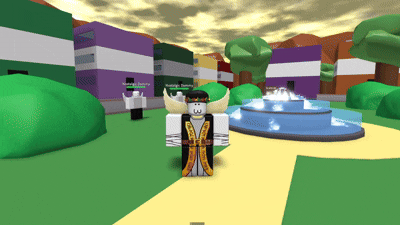

I know how to work with LUA, GDScript and Python.
I know basics of these 3 programming languages, but im certainly not the best at them. I do have a few projects though!
I never worked in any game developing studio so i am currently seeking to do so.
My LUA experience is formed out of Roblox. Though, I don't have much finished self-made projects using LUA, but here is one of them:
And there is also another project I've made in a Roblox game called "Retrostudio", which is an old Roblox experience inside of roblox.
In that game, you can use LUA block scripting, and here is a thing i made on it.

There i tried recreating combat system of a game A Bizarre Day, which is an old Roblox JoJo game i really liked.
I can make simple stuff on Roblox,
so i'm looking forward to be a junior developer.
I started using GDScript/Godot Engine at the start of the summer of 2025 to make a basic mobile app
about physics, it was just a simple guiding app i made for my physics teacher as a gift (she actually really liked it!).
I managed to finish it by autumn.